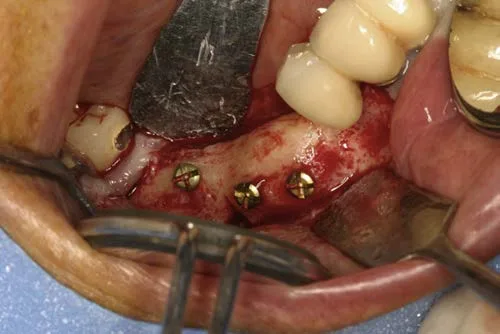
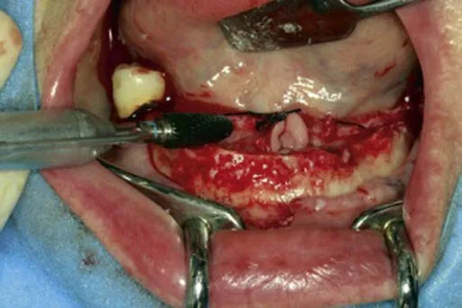

نسخه استخراجشده؛ ترجمه یا تأیید علمی انجام نشده است. وضعیت: captured
انتخاب نخ بخیه بر سه ویژگی میچرخد: سرعت جذب، استحکام کششی، و واکنشزایی بافتی.
PGA (پلیگلیکولیک اسید) — نخ جذبی سنتتیک با استحکام کششی عالی. در دو نوع عرضه میشود: جذب معمول ۲۱ تا ۲۸ روز و جذب سریع ۷ تا ۱۴ روز.
PTFE — استحکام کششی استثنایی.
و در سمت مقابل، نخهایی که برای ایمپلنت مناسب نیستند: موادی که استحکام کششی را ظرف چند روز از دست میدهند. نمونهی هشداردهندهاش نخی است که بسیار آنتیژنیک است و ۵۰ درصد استحکام کششیاش را پس از ۵ روز از دست میدهد — یعنی درست وقتی هنوز به آن نیاز داری.
واکنشزایی بافتی بهصورت پاسخ التهابی بروز میکند و معمولاً در ۲ تا ۷ روز اول پس از بخیه ظاهر میشود. نخ کمواکنش، ترمیم آرامتری میدهد.
قاعدهی انتخاب: نخ باید تا پایان دورهی بحرانی ترمیم استحکامش را حفظ کند. نخی که زودتر از بافت تسلیم شود، بیفایده است.

ورود سوزن. سوزن باید با زاویهی ۹۰ درجه و در فاصلهی حدود ۲ تا ۳ میلیمتر از حاشیهی برش وارد بافت شود — و از سمت مقابل با همان فاصله خارج شود. کمتر از ۲ میلیمتر، لبهی بافت را پاره میکند. تقارن دو طرف، بافت را همسطح نگه میدارد. فاصلهی ۵ تا ۶ میلیمتر فقط به گام دور در بخیهی تشک عمودی مربوط است، نه به قاعدهی عمومی ورود سوزن.
گره. برای اغلب اعمال ایمپلنت، گره انتخابی گره جراح اصلاحشده است. با مواد سنتتیک — چه جذبی و چه غیرجذبی — همین گره توصیه میشود. الگوی توصیهشده: گره جراح سهمرتبهای مربعی (۲/۱/۱).
برش انتهای نخ. عددی که راحتی بیمار را تعیین میکند: ۲ تا ۳ میلیمتر. کمتر از ۲ به شل شدن گره میانجامد و بیشتر از ۳ بیمار را آزار میدهد.
و مهمترین اصل: بستهشدن بدون تنش. این زنجیره را حفظ کن، چون در کل جراحی ایمپلنت تکرار میشود:
تنش بیشازحد ← تروما به بافت ← افزایش تورم ← ناراحتی بیشتر بیمار و احتمال بیشتر باز شدن خط برش یا اختلال در ترمیم زخم.
و در جهت معکوس: هر کاری که ادم پس از عمل را کم کند، تنش خط برش را کم میکند و احتمال باز شدن آن را پایین میآورد. برای همین است که برش تیز، رفلکشن حسابشده و برش رهاسازی — همه در نهایت به بستهشدن بدون تنش خدمت میکنند.
هدف نهایی: بستهشدن اولیه، که ترمیم بهتر و احتمال کمتر عوارض پس از عمل را به همراه دارد.
